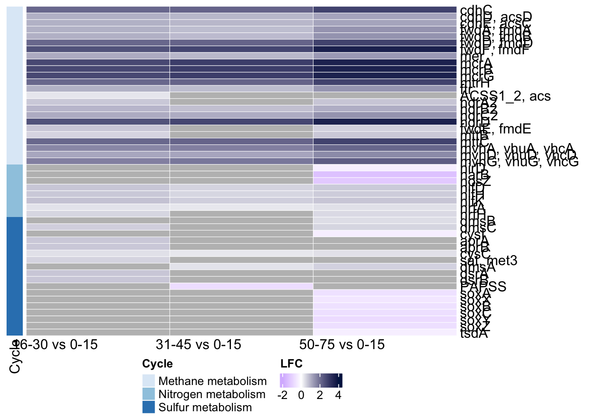

# load libraries
library(tibble)
library(phyloseq)
library(dplyr)
library(ANCOMBC)
library(tidyverse)
library(ggplot2)
library(RColorBrewer)
library(ComplexHeatmap)
library(circlize)
library(DT)
options(DT.options = list(
initComplete = JS("function(settings, json) {",
"$(this.api().table().header()).css({'background-color':
'#000', 'color': '#fff'});","}")))Metabolic Inference
01. Load libraries and prepare data
#read ko data
otu_table <- read_delim("data/ko.txt",
delim = "\t", escape_double = FALSE, trim_ws = TRUE,
comment = "#", show_col_types = FALSE)
# convert first column to row names
otu_table <- otu_table %>% column_to_rownames("FeatureID")
# convert otu_table to physeq
otu_table_phyloseq <- otu_table(otu_table, taxa_are_rows = TRUE)
metadata <- read_tsv("data/metadata.tsv") %>% column_to_rownames("SampleID")
sample_data_phyloseq <- sample_data(metadata)
ps <- phyloseq(otu_table_phyloseq, sample_data_phyloseq)
tse <- mia::convertFromPhyloseq(ps)
#matrix
assay(tse, "counts") <- as.matrix(assay(tse, "counts")@.Data)
#depth_cm to factor
str(colData(tse)$Depth_cm)
levels(colData(tse)$Depth_cm)# contrast matrix
contrast_matrices <- list(
matrix(c(1, -1, 0,
0, 1, -1,
0, 0, 1),
nrow = 3, byrow = TRUE),
matrix(c(1, 0, -1,
0, 1, -1,
0, 0, 1),
nrow = 3, byrow = TRUE),
matrix(c(1, 0, 0,
0, 1, -1,
0, 0, 1),
nrow = 3, byrow = TRUE),
matrix(c(1, -1, 0,
0, 1, 0,
0, 0, 1),
nrow = 3, byrow = TRUE))
# nodes
nodes <- list(1, 1, 1, 1)02. Run ANCOM-BC2
output <- ancombc2(
data = tse,
assay_name = "counts",
tax_lev = NULL,
fix_formula = "Location + Depth_cm",
rand_formula = "(1 | ID)",
p_adj_method = "holm",
pseudo_sens = TRUE,
prv_cut = 0.10,
lib_cut = 1000,
s0_perc = 0.05,
group = "Depth_cm",
struc_zero = TRUE,
neg_lb = TRUE,
alpha = 0.05,
n_cl = 2,
verbose = TRUE,
global = TRUE,
pairwise = TRUE,
dunnet = TRUE,
trend = TRUE,
iter_control = list(tol = 1e-2, max_iter = 20, verbose = TRUE),
em_control = list(tol = 1e-5, max_iter = 100),
lme_control = lme4::lmerControl(),
mdfdr_control = list(fwer_ctrl_method = "holm", B = 100),
trend_control = list(
contrast = contrast_matrices,
node = nodes,
solver = "ECOS",
B = 100
)
)
# save RDS03. Get differential data
# Extract results
res_pair <- output$res_pair
# Create dataframe df_fig_pair1
df_fig_pair1 <- res_pair %>%
dplyr::filter(`diff_Depth_cm16-30` == 1 |
`diff_Depth_cm31-45` == 1 |
`diff_Depth_cm50-75` == 1 |
`diff_Depth_cm31-45_Depth_cm16-30` == 1 |
`diff_Depth_cm50-75_Depth_cm16-30` == 1 |
`diff_Depth_cm50-75_Depth_cm31-45` == 1) %>%
dplyr::mutate(lfc1 = ifelse(`diff_Depth_cm16-30` == 1, round(`lfc_Depth_cm16-30`, 2), NA),
lfc2 = ifelse(`diff_Depth_cm31-45` == 1, round(`lfc_Depth_cm31-45`, 2), NA),
lfc3 = ifelse(`diff_Depth_cm50-75` == 1, round(`lfc_Depth_cm50-75`, 2), NA),
lfc4 = ifelse(`diff_Depth_cm31-45_Depth_cm16-30` == 1, round(`lfc_Depth_cm31-45_Depth_cm16-30`, 2), NA),
lfc5 = ifelse(`diff_Depth_cm50-75_Depth_cm16-30` == 1, round(`lfc_Depth_cm50-75_Depth_cm16-30`, 2), NA),
lfc6 = ifelse(`diff_Depth_cm50-75_Depth_cm31-45` == 1, round(`lfc_Depth_cm50-75_Depth_cm31-45`, 2), NA)) %>%
tidyr::pivot_longer(cols = lfc1:lfc6, names_to = "group", values_to = "value") %>%
dplyr::arrange(taxon)# Create dataframe fig_pair2
df_fig_pair2 <- res_pair %>%
dplyr::filter(`diff_Depth_cm16-30` == 1 |
`diff_Depth_cm31-45` == 1 |
`diff_Depth_cm50-75` == 1 |
`diff_Depth_cm31-45_Depth_cm16-30` == 1 |
`diff_Depth_cm50-75_Depth_cm16-30` == 1 |
`diff_Depth_cm50-75_Depth_cm31-45` == 1) %>%
dplyr::mutate(lfc1 = ifelse(`passed_ss_Depth_cm16-30` == 1 & `diff_Depth_cm16-30` == 1, "blue3", "black"),
lfc2 = ifelse(`passed_ss_Depth_cm31-45` == 1 & `diff_Depth_cm31-45` == 1, "blue3", "black"),
lfc3 = ifelse(`passed_ss_Depth_cm50-75` == 1 & `diff_Depth_cm50-75` == 1, "blue3", "black"),
lfc4 = ifelse(`passed_ss_Depth_cm31-45_Depth_cm16-30` == 1 & `diff_Depth_cm31-45_Depth_cm16-30` == 1, "#00CCFF", "black"),
lfc5 = ifelse(`passed_ss_Depth_cm50-75_Depth_cm16-30` == 1 & `diff_Depth_cm50-75_Depth_cm16-30` == 1, "#00CCFF", "black"),
lfc6 = ifelse(`passed_ss_Depth_cm50-75_Depth_cm31-45` == 1 & `diff_Depth_cm50-75_Depth_cm31-45` == 1, "#00CCFF", "black")) %>%
tidyr::pivot_longer(cols = lfc1:lfc6, names_to = "group", values_to = "color") %>%
dplyr::arrange(taxon)# Combine dataframes df_fig_pair1 and df_fig_pair2
df_fig_pair <- df_fig_pair1 %>%
dplyr::left_join(df_fig_pair2, by = c("taxon", "group"))
# Rename groups
df_fig_pair$group <- recode(df_fig_pair$group,
`lfc1` = "16-30 vs 0-15",
`lfc2` = "31-45 vs 0-15",
`lfc3` = "50-75 vs 0-15",
`lfc4` = "31-45 vs 16-30",
`lfc5` = "50-75 vs 16-30",
`lfc6` = "50-75 vs 31-45")
df_fig_pair$group <- factor(df_fig_pair$group,
levels = c("16-30 vs 0-15",
"31-45 vs 0-15",
"50-75 vs 0-15",
"31-45 vs 16-30",
"50-75 vs 16-30",
"50-75 vs 31-45"))
# Filter comparisons with significant values
df_fig_pair <- df_fig_pair %>%
group_by(group) %>%
filter(any(!is.na(value))) %>%
ungroup()04. Merge with KO DiTing cycles info
# Read data
DiTing_cycles<-suppressMessages(read_delim(
"https://raw.githubusercontent.com/xuechunxu/DiTing/master/table/KO_affilated_to_biogeochemical_cycle.tab",
delim="\t") %>%
fill(Cycle) %>%
fill(Pathway) %>%
rename_with(~ c("Cycle", "Pathway_cycle", "KO", "Detail_cycle")))# convert to data.frame
df_fig_pair <- as.data.frame(df_fig_pair)
DiTing_cycles <- as.data.frame(DiTing_cycles)
# rename ko ids
df_fig_pair <- df_fig_pair %>%
rename_with(~ ifelse(. == "taxon", "KO", .)) %>%
mutate(KO = str_remove_all(KO, "ko:"))
DiTing_cycles <- DiTing_cycles %>%
mutate(KO = str_remove_all(KO, "ko:"))
# force KO to character df
df_fig_pair$KO <- as.character(df_fig_pair$KO)
DiTing_cycles$KO <- as.character(DiTing_cycles$KO)
# Select cycles
kegg_abundance_depth_DT <- df_fig_pair %>%
dplyr::left_join(DiTing_cycles, by = "KO",relationship = "many-to-many") %>%
drop_na(Cycle) %>%
filter(Cycle %in% c("Nitrogen metabolism", "Methane metabolism",
"Sulfur metabolism")) %>% distinct()
# join
kegg_abundance_depth_DT <- kegg_abundance_depth_DT %>%
merge(ko_list, by = "KO")
# filter informative comparisons
kegg_abundance_depth_DT <- kegg_abundance_depth_DT %>%
filter(!group %in% c("31-45 vs 16-30", "50-75 vs 16-30", "50-75 vs 31-45"))
# limits
lo <- floor(min(df_fig_pair$value, na.rm = TRUE))
up <- ceiling(max(df_fig_pair$value, na.rm = TRUE))
mid <- (lo + up) / 2
# # join gene names
kegg_abundance_depth_DT <- kegg_abundance_depth_DT %>%
mutate(Gene_label = paste0(Genes, " (", Gene_description, ")"))05. Heatmap
# check heatmap_matrix format
heatmap_matrix <- kegg_abundance_depth_DT %>%
select(group, value, Genes) %>%
pivot_wider(names_from = group, values_from = value, values_fn = mean) %>%
column_to_rownames("Genes") %>%
as.matrix()
# Create row Cycle annotations
annotation_row <- kegg_abundance_depth_DT %>%
select(Genes, Cycle) %>%
distinct(Genes, Cycle, .keep_all = TRUE) %>%
column_to_rownames("Genes")
# check that Cycle is sort factor
annotation_row <- annotation_row %>%
arrange(Cycle)
# Reorder heatmap_matrix same of annotation_row
heatmap_matrix <- heatmap_matrix[rownames(annotation_row), ]
# Define colors to row annotation
cycle_colors <- setNames(
brewer.pal(length(unique(annotation_row$Cycle)), "Blues"),
unique(annotation_row$Cycle))
# Create row annotation sorted
ha_row <- rowAnnotation(
Cycle = annotation_row$Cycle,
col = list(Cycle = cycle_colors),
annotation_legend_param = list(title = "Cycle"))# heatmap
ht <- Heatmap(
heatmap_matrix,
name = "LFC",
col = colorRamp2(c(-2,0,4), c("#D7bAfEfF","white","#011c50FF")),
left_annotation = ha_row,
cluster_rows = FALSE,
cluster_columns = FALSE,
row_names_gp = gpar(fontsize = 12),
column_names_gp = gpar(fontsize = 12),
column_names_rot = 0,
column_title_gp = gpar(fontsize = 10),
rect_gp = gpar(col = "white", lwd = 0.5),
heatmap_legend_param = list(title = "LFC", direction = "horizontal"))
# Draw with bottom legend
ht_bottom <- draw(ht, heatmap_legend_side = "bottom",
annotation_legend_side = "bottom")
# save
pdf("Figures/interior_mangroves/DA_picrust_Heatmap_depth.pdf", width = 6, height = 8)
ht
dev.off()quartz_off_screen
2 saveRDS(ht, "rds/interior_mangroves/DA_picrust.rds")